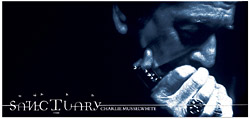
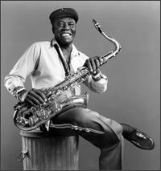
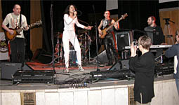
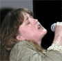

2004 |
весна |
|
рубрику |
|
Награды им.Дабл-Ю Си Хэнди -
|
| Блюзмен года - БиБиКинг | Blues Entertainer of the Year - B.B. King |
| Блюзбэнд года - "Румфул оф блюз" | Blues Band of the Year - Roomful of Blues |
| Блюзовый альбом года - "Блюзовый певец" Бадди Гая |
Blues Album of the Year - "Blues Singer" - Buddy Guy |
| Блюзовый дебют года - "Доктор Вельвет" Ника Каррана и "Найтлайфс" |
Best New Artist Debut - "Doctor Velvet" - Nick Curran and the Nitelifes |
| Блюзмен года в современном стиле - Бадди Гай | Contemporary Blues Male Artist of the Year - Buddy Guy |
| Блюзвумен года в современном стиле - Марсия Болл | Contemporary Blues Female Artist of the Year - Marcia Ball |
| Соул-исполнитель года - Соломон Бюрк | Soul Blues Male Artist of the Year - Solomon Burke |
| Соул-исполнительница года - Этта Джеймс | Soul Blues Female Artist of the Year - Etta James |
| Блюзмен года в традиционном стиле - Пайнтоп Перкинс |
Traditional Blues Male Artist of the Year - Pinetop Perkins |
| Блюзвумен года в традиционном стиле - Коко Тейлор |
Traditional Blues Female Artist of the Year - Koko Taylor |
| Артист года в акустическом стиле - Джон Хэммонд |
Acoustic Blues Artist of the Year - John Hammond |
| Гитарист года - Дюк Робиллард | Blues Instrumentalist Guitar - Duke Robillard |
| Клавишник года - Доктор Джон | Blues Instrumentalist Keyboards - Dr. John |
| Исполнитель на губной гармонике года - Чарли Масселвайт |
Blues Instrumentalist Harmonica - Charlie Musselwhite |
| Басист года - Уилли Кент | Blues Instrumentalist Bass - Willie Kent |
| Барабанщик года - Уилли "Биг Айз" Смит | Blues Instrumentalist Drums - Willie "Big Eyes" Smith |
| Медная группа года - "Румфул оф блюз" | Blues Instrumentalist Horns - Roomful of Blues Horns |
| Среди других инструментов: скрипач года - Кларенс "Гейтмаус" Браун |
Blues Instrumentalist Other Fiddle - Clarence "Gatemouth" Brown |
| Соул-блюзовый альбом года - "Давайте повеселимся" Этты Джеймс |
Soul Blues Album of the Year - Let's Roll - Etta James |
| Акустический блюзовый альбом года - "Блюзовый певец" Бадди Гая |
Acoustic Blues Album of the Year - Blues Singer - Buddy Guy |
| Современный блюзовый альбом года - "Так много рек" Марсии Болл |
Contemporary Blues Album of the Year - So Many Rivers - Marcia Ball |
| Альбом-возвращение года - "Такая женщина, как я" Битти Лаветт |
Comeback Blues Album of the Year - A Woman Like Me - Bettye LaVette |
| Традиционный блюзовый альбом года - "В какую сторону Техас?" Ансона Фандерберга и "Рокетс" |
Traditional Blues Album of the Year - Which Way Is Texas? - Anson Funderburgh and the Rockets |
| Исторический блюзовый альбом года - "Концерт Мадди "Миссиссиппи" Уотерса" |
Historical Blues Album of the Year - Muddy "Mississippi" Waters Live - Muddy Waters |
| Блюзовая песня года - "В поисках приключений на свою голову" Кима Уилсона и Аманды Тейлор |
Blues Song of the Year - Lookin' For Trouble! - Kim Wilson/Amanda Taylor |
Полный списон номинантов был опубликован в зимних новостях блюз-ру.
*

Чарли Масселвайт:Во вторник, 6 апреля, официально увидел свет новый альбом ветерана и мастера губной гармоники Чарли Масселвайта "Убежище" (Charlie Musselwhite - SANCTUARY). Альбом выпущен лейблом Питера Габриэля Real World, что отчасти неожиданно. Однако а) Вот уже полтора десятилетия Чарли меняет лейблы как перчатки; б) он с давних пор дружен с ансамблем Blind Boys Of Alabama, который с Real World связывают очень теплые отношения. Blind Boys Of Alabama принимали участие в записи нового альбома Масселвайта, и это - далеко не первое их сотрудничество в студии. Другие видные музыканты в записи: Charlie Sexton и Ben Harper. В альбоме 12 песен, 4 новых - сочинения самого Масселвайта. Каверверсии неожиданны и любопытны. Например, вряд ли кто ожидал, что Масселвайт захочет петь что-то из репертуара Savoy Brown. И уж определенно, нужна отвага, чтобы взяться за пугающую песню Рэнди Ньюмана "Сжечь кукурузное поле" (Burn Down the Cornfield).
Пресс-релиз RealWorld сообщает, что в Sanctuary Чарли Масселвайт "ищет путь через боль, одиночество и отчаяние; и его музыка дарит просвет в этих темных темах... В эпоху, когда блюз попал под нескончаемую вереницу песен "эх-повеселимся" 90-х, Sanctuary звучит освежающе по-настоящему. Так же, как старые блюзы Роберта Джонсона, Мадди Уотерса и Джона Ли Хукера не боялись стенаний и плача, это альбом ищет возможность жить с болью и в борьбе ней, а не затирать ее подслащенным оптимизмом. Рассказывая о настоящих чувствах, Sanctuary дает то ощущение гармонии, которое происходит только через честность рассказчика". Чикагская газета Sun-Times пишет: "темы болезненны, но чувство надежды превалирует".
Ну и как чаще всего в блюзовом сообществе, нужна помощь братьев по блюзу. Помощь эта, как всегда, взаимовыгодна. В ближайшую неделю этот диск можно заказать на Amazon.com всего за 15 баксов. Потом он отправляется в долгое хранилище, и цена его возрастает. Для Масселвайта весьма важна эта первая неделя, и его личная просьба ко всем любителям блюза, в том числе и к посетителям блюз-ру, поддержать его именно таким образом. Музыка Масселвайта в рекламе не нуждается. Бесспорно, это один из ведущих виртуозов губной гармоники сегодня, абсолютно компетентный в блюзе человек; и он умеет знание и мастерство сочетать с настоящим вдохновением.
*

A.C.REED25 февраля 2004 на 78м году жизни скончался от рака известный и уважаемый чикагский саксофонист и вокалист Эй-Си Рид (A.C.Reed).
Уроженец Миссури, он был покорен звучанием саксофона еще в раннем детстве, услышав в музыкальном автомате пластинку оркестра Эрскайна Хокинса. Инструмент он познавал самоучкой, выпрашивая его у знакомых и едва знакомых саксофонистов. В 1942г. переехал в блюзовый эпицентр мира, нашел работу и с первой же получки купил себе первый собственный саксофон. Работая на мукомольном заводе, он учился в Чикагской консерватории, а дома отслушивал пластинки Джена Эммонса, стараясь воспроизвести его звучание. Однако не джаз привлекал его. Уроки "практической" игры на саксофоне он брал у Джей-Ти Брауна (записавшего с Элмором Джеймсом главные хиты последнего). В конце 40-х он играл с Уилли Мэйбуном и Ирлом Хукером. В 50-х стал профи. В 60-х активно записывался как аккомпаниатор на всех чикагских лейблах, включая Chess. Но в конце 1967 года решил, что концерты важнее и присоединился к группе Бадди Гая и Джуниора Уэллса. В 1970м его, как 100%ный блюзовый ингредиент, пригласили в свой мировой тур "Роллинг Стоунз". С 1977г. присоединился к группе Алберта Коллинза, с которой провел 10 лучших лет и в турне, и в студии. Звучание его саксофона на сцене можно послушать и в японском концерте Коллинза (Live In Japan), и в альбоме Сана Силза (Live And Burnin'). Его собственная группа принимала участие в обзорном проекте фирмы "Alligator" (Living Chicago Blues). В 1983г. его собственная группа The Spark Plugs дала за год 250 концертов. Сольная дискография Эй-Си Рида включает три альбома: в записи первого принимали участие Бонни Райт и Стиви Рей Воэн; последний альбом вышел в 2002г.
Эй-Си Рид сочинял блюзы, замечательные сочетанием иронии и блюзового взгляда на житейские передряги. К примеру, первый его альбом назывался "Не тем делом я занят" (I'm In The Wrong Business). Он играл на саксофоне точно в блюзовом стиле. Для него это было просто - он же был блюзменом до мозга кости. Похороны состоялись 6 марта, проститься с ним пришли многие известные чикагские блюзмены. Мир его праху, а сам он присоединился к звездному блюзбэнду.
*
Организация с неслабым названием "Союз фольклерной музыки и танца Северной Америки" (The North American Folk Music & Dance Alliance - www.folk.org) своей задачей видит поддержку народной музыки любых жанров. В популяризаторских целях раз в год проводится церемония награждения премией "За общие достижения" (Lifetime Achievement Award). 3 марта 2004г. на церемонии в Сан-Диего, Калифорния, очередная награда была посмертно присвоена легендарному певцу и гитаристу Миссиссиппи Джону Харту (Mississippi John Hurt (1893-1966)). Церемония проводится с 1995г., первым, что вполне логично, были отмечены достижения фольклориста Алана Ломакса (Alan Lomax). Среди других удостоенных этой награды: Преподобный Гэри Дэвис и Лидбелли, а так же основатель фирмы Arhoolie Крис Стрейчвитс.
*
Лейбл "Слепой свин" "Blind Pig" объявил о подписании контракта с Родом Пьяццой и его группой "Могучих летунов" (Rod Piazza & the Mighty Flyers). Существующая более двадцати лет группа трижды удостаивалась премии W.C.Handy как "блюзбэнд года". В 80-х Пьяцца продюсировал для несуществующего ныне независимого лейбла запись альбомов ветеранов блюза: Jimmy Rogers, Pee Wee Crayton, Smokey Wilson, Johnny Dyer and George "Harmonica" Smith - все они переизданы ныне на Blind Pig. Видимо, это было началом сотрудничества. Первый альбом Пьяццы на новом лейбле будет озаглавлен "Чтобы было по-настоящему" и будет издан уже нынешней весной. Это четырнадцатый номерной альбом в дискографии группы. В прошлом году Blind Pig очень удачно заключал контракты с новичками: с певицей Рени Остин (Renee Austin) и гитаристом Ником Кюрраном (Nick Curran). Их дебютные альбомы номинировались на премию W.C.Handy в категории "Лучшая дебютная работа нового артиста".
*

Lady's Blues NightВ канун кларацеткиного дня, в ЦДХ компания "Другая музыка" провела смотр отечественного женского блюзового полка. На сцену вышло 6 представительниц оного.
Сразу надо сказать, что блюзовую программу смогла представить только отчаянная Тамара Кожекина и ее группа "Гуляй-ребятишек" (Boogie Chillen). Почему "отчаянная"? на фоне прочих девах, рассуждающих о том, что вся музыка хороша и не надо замыкаться в блюзе, тамаркина привязанность к упомянутому жанру выглядит обреченным упорством. А без этого фона музыка Boogie Chillen слушалась великолепно весело и жизненно: там были песни про секс как таковой, про секс с элементами романтики, и про сексуальность железнодорожных ритмов, и про таинственный "ванг-дэнг-дууудлл на всю ночь". Тамара пела с полным погружением в блюз. Группа выступила в лучшей форме за весь год ее формального существования, а Алексей Селуянов весьма впечатлил даже скептиков своим прогрессом в гитарном мастерстве и тонким ощущением чикагского электрогитарного стиля. (Вот уж действительно редко теперь можно услышать этот стиль без примесей, все боятся, видимо, упреков в отсутствии новомодных фишек. Однако смешение стилей вообще отбивает всякий вкус. Самоограничение во имя цельности стиля представляется мне более важным, нежели желание впечатлить публику гитарным наворотом. И чем проще игра - тем яснее искренность. Разве не это важнее всего в блюзе?). У Boogie Chillen немало нерешенных ансамблевых проблем, которые при всех их достоинствах не пускают их в первую лигу. Но идет группа, как говорил кларин друг,"правильным путем". Значит, если преодолеют нормальное блюзовое разгильдяйство, все будет просто отлично. Пробный альбом для внутреннего пользования группа уже записала, предстоит теперь студийная работа по-взрослому - в принципе, обычно это дисциплинирует.
Из прочих Оксана Кочубей была ближе всех к блюзовому формату, в его решении а-ля Дженис Джоплин. Высокий черный цилиндр был весьма к месту в этой блюз-роковой веселой и местами надрывной клоунаде. Ее группа "Live'N'Joy" дала отличный жаркий ритм, и Оксана, которая к празднику стала девочкой с голубыми волосами, могла оттянуться по-полной и без оглядки. Оглядываться можно бы на упреки в неразрывной привязанности к Дженис... но нельзя не замечать, насколько органично у нее получаются песни и приемы 35-летней давности. Такое подражание - только в радость. (На этом сайте солистку можно увидеть с негубной гармошкой а по ссылки выйти на музыку.)

Юлия Смолянин все еще пребывает в поисках стиля, а ее группа - в поисках названия. Замечательный голос дает ей богатство выбора. Однако в тот вечер весь выбор замкнулся на к Скотте Хендерсоне. Как ее группа надеется победить Скотта на его собственном поле - непонятно. Старину Скотта можно послушать раз в год в клубе Форте, и Гургену его никогда не переиграть, а уж ритм-секции предстоят еще годы упорной работы, прежде чем они сыграют фанк "по-взрослому". Впрочем, если считать, что группа без названия пребывает в начальной стадии, то играть репетруар Хендерсона (любимого гитариста А. "Вайта" Белова, между прочим) - хорошая школа. Вторая песня в выступлении на вечере дамского блюза была медленной балладой, которую Юля спела и мастерски и глубоко эмоционально... далее фанк поехал верхом на фанке и фанк нещадно погоняя...Инесс по традиции вышла на сцену босиком и попыталась поднять зал на квиновскую "We Will Rock You". Я думал, сейчас полуголые дородные девицы внесут ящики пепси (как это происходит в телевизоре), но вместо этого появился один сияющий глава "Другой музыки" Вовка Кожекин и всучил певице цветы.
Аккомпанировали Инесс любимцы публики "Блюзовые Доктора". Видимо, в их планах - широкомасштабная блюзовая экспансия в столицу. Едва они закрепились на захваченном плацдарме, как уже вызвали из Екатеринбурга подкрепление: хорошенькую и стройную Катю Сомову, певицу. Она кокетлива на сцене и неплохо поет. Только что с продюсерской помощью отца и сына Пантыкиных (из которых Александр Александрович является "Дедушкой уральского рока") она записала альбом Tomcat's Eye - феноменально качественный умный попс на хорошем английском языке, никакого отношения к блюзу неимеющего.
Концерт открывала Тина Кузнецова. Как малооригинальная певица со склонностью к авангарду оказалась в блюзовой программе - не постичь ограниченным умам. Кажется, она все еще считает, что скрести когтями по струнам рояля - это высокоинтеллектуальное искусство. Старики слышали, как с большим успехом это делал Вячеслав Ганелин почти 30 лет назад, а ведь далеко не он придумал этот приемчик: малые детишки им пользуются со времен изобретения этого инструмента.
Но в принципе, высказанные тут обиды - брюзжание одиночки, недовольного малой блюзовостью события. Если бы это был просто Lady's Vocal Night - то и претензий бы быть не могло. И в целом событие оказалось гораздо более интересным и веселым, чем предрекали пресловутые скептики. Публика расходилась весьма довольная, и энтузиасты из числа слушателей бросались разыскивать именно ту, которая понравилась больше всего, чтобы высказать горячую признательность. И что хорошо - таковые энтузиасты нашлись буквально у каждой из прекрасных дам.
*